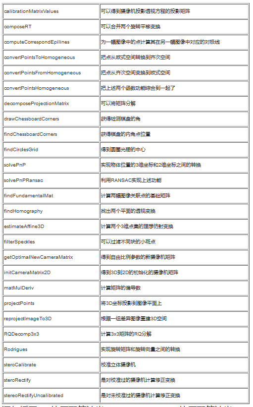

Home
因为我个人太笨了，相机自身畸变校准(calibrateCamera)公式及结果参数还能看懂，但是看了将近1年的各种handeye资料，还是没法理解opencv中的坐标变换及各矩阵参数意思，所以我目前还无法使用OpenCV进行手眼标定(也就是调用直接使用calibrateHandeye())。
结果就是现在勉强能对
1.SCARA类型机器人的眼在手上和眼在手外；
2.6轴类人手臂机器人 (Six-Axis articulated robots) 的眼在手外，或者眼在手上但是固定角度拍摄；
平面2D的进行简单的标定(采用特殊方式，使用手动计算offset及旋转角，或者使用 estimateRigidTransform())，对于3D空间深度的校准就实在无能为力啦。。。
下面是几篇我自己简单写的流水账式记录：
相机标定(棋盘格方式)-calibrateCamera()
Camera extrinsic calibration
手动计算手眼标定
手眼标定-estimateRigidTransform()
=========================================================================================
下面放一些当时看的手动计算手眼标定的链接(没有排序)：
OpenCV 之 空间刚体变换
转载这个的目的是对手眼标定中坐标变换理解有很大的帮助。附个本站做的备份^.^ OpenCV 之 空间刚体变换
刚体就是 "刚性物体"，它在运动过程中，内部各质点间的相对位置不会改变，也即 每两个质点间的距离 保持不变
假设刚体内任意两个质点，坐标分别为 (X1,Y1,Z1) 和 (X2,Y2,Z2)，则在刚体运动过程中，它们满足如下条件：
((X1-X2)^2 + (Y1-Y2)^2 + (Z1-Z2)^2 )|t = l^2
---------------------------------------------------------------------------------------
opencv 图像变换原理详解 图像平移 图像旋转 图像缩放
常见的2D图像变换从原理上讲主要包括基于2×3矩阵的仿射变换和基于3×3矩阵透视变换。 仿射变换: 基本的图像变换就是二维坐标的变换：从一种二维坐标(x,y)到另一种二维坐标(u,v)的线性变换 矩阵T(2×3)就称为仿射变换的变换矩阵，R为线性变换矩阵，t为平移矩阵，简单来说，仿射变换就是线性变换+平移。 变换后直线依然是直线，平行线依然是平行线，直线间的相对位置关系不变，因此非共线的三个对应点便可确定唯一的一个仿射变换， 线性变换4个自由度+平移2个自由度→仿射变换自由度为6。 刚体变换: 旋转+平移也称刚体变换（Rigid Transform），就是说如果图像变换前后两点间的距离仍然保持不变，那么这种变化就称为刚体变换。 刚体变换包括了平移、旋转和翻转，自由度为3。由于只是旋转和平移， 刚体变换保持了直线间的长度不变，所以也称欧式变换（变化前后保持欧氏距离）。 相似变换: 相似变换又称缩放旋转，相似变换包含了旋转、等比例缩放和平移等变换，自由度为4。 在OpenCV中，旋转就是用相似变换实现的. 透视变换: 透视变换（Perspective Transformation）是将二维的图片投影到一个三维视平面上， 然后再转换到二维坐标下，所以也称为投影映射（Projective Mapping）。 简单来说就是二维→三维→二维的一个过程。 前面仿射变换后依然是平行四边形，并不能做到任意的变换。
本地保存的链接： opencv 图像变换原理详解 图像平移 图像旋转 图像缩放
---------------------------------------------------------------------------------------
OpenCV仿射变换+投射变换+单应性矩阵
本来想用单应性求解小规模运动的物体的位移，但是后来发现即使是很微小的位移也会带来超级大的误差甚至错误求解，
看起来这个方法各种行不通，还是要匹配知道深度了以后才能从三维仿射变换来入手了，纠结~
estimateRigidTransform()：计算多个二维点对或者图像之间的最优仿射变换矩阵 （2行x3列），H可以是部分自由度，比如各向一致的切变。
getAffineTransform()：计算3个二维点对之间的仿射变换矩阵H（2行x3列），自由度为6.
warpAffine()：对输入图像进行仿射变换
findHomography： 计算多个二维点对之间的最优单映射变换矩阵 H（3行x3列） ，使用最小均方误差或者RANSAC方法 。
getPerspectiveTransform()：计算4个二维点对之间的透射变换矩阵 H（3行x3列）
warpPerspective()： 对输入图像进行透射变换 perspectiveTransform()：对二维或者三维矢量进行透射变换，也就是对输入二维坐标点或者三维坐标点进行投射变换。
estimateAffine3D：计算多个三维点对之间的最优三维仿射变换矩阵H （3行x4列）
transform()：对输入的N维矢量进行变换，可用于进行仿射变换、图像色彩变换.
findFundamentalMat：计算多个点对之间的基矩阵H。
快速解决：
问题1：如何计算3个二维点对之间的仿射变换矩阵？
答：使用getAffineTransform()。
问题2：如何计算多个二维点对之间的仿射变换矩阵（使用误差最小准则 ）？
答：使用estimateRigidTransform()或者findHomography。
问题3：如何计算4个二维点对之间的透射变换？
答：使用getPerspectiveTransform()。
问题4：如何计算多个三维点对之间的仿射变换？
答：使用estimateAffine3D。
问题5：如何对输入图像进行仿射变换？
答：使用warpAffine()。
问题6：如何对输入图像进行透射变换？
答：使用perspectiveTransform()。
问题7：如何对输入的二维点对进行仿射变换？
答：使用transform()。
问题8：如何对输入的三维点对进行投射变换？
答：使用perspectiveTransform()。
---------------------------------------------------------------------------------------
基于OpenCv的机器人手眼标定（九点标定法）
_files/20191225082909353.bmp)
这个是我手动计算手眼标定时主要参考的网页之一。本地链接参考： 基于OpenCv的机器人手眼标定（九点标定法） 对于初学者而言，对相机的标定经常模糊不清。不知道机器坐标与相机坐标如何转换，两个坐标系又是如何建立？ 我们通常是利用张氏标定法，针对于相机的畸变进行标定，利用校正得到的参数对图形进行处理后再呈现出来。 这个方法网上用的人很多，资料也较为全面。这里就不做说明了。 本文主要是针对机械手的手眼标定，一般而言目前相机的畸变较小，精度也较为准确， 使用该方法进行标定也能得到较好的效果。 首先，对于九点标定而言。我们使用到的是OpenCv中的estimateRigidTransform 函数。 函数定义如下： Mat estimateRigidTransform(InputArraysrc,InputArraydst,boolfullAffine) 前两个参数，可以是 ：src=srcImage (变换之前的图片Mat) dst=transImage（变换之后的图片Mat） 也可以： src=array（变换之前的关键点Array） dst=array（变换之后的关键点Array） 第三个参数： 1（全仿射变换,包括：rotation, translation, scaling,shearing,reflection）
---------------------------------------------------------------------------------------
基恩士机械手视觉动画库
包含“眼在手上(手部相机的抓取动作设定示例)”、“眼在手外(上固定相机的抓取动作设定示例)”、 “下固定相机的抓取偏移补正动作设定示例"三种方式标定的动画演示，可以直观的学习什么是手眼标定。
---------------------------------------------------------------------------------------
OpenCV相机标定和姿态更新

这一节我们首先介绍下计算机视觉领域中常见的三个坐标系：图像坐标系，相机坐标系， 世界坐标系以及他们之间的关系，然后介绍如何使用张正友相机标定法标定相机。
本地链接参考： OpenCV相机标定和姿态更新
---------------------------------------------------------------------------------------
OpenCV学习笔记（十五）——摄像机的标定和3D重建calib3D

---------------------------------------------------------------------------------------
OpenCV进行各种矩阵变换及变换参数求解
OpenCV可以处理许多2D、3D的变换矩阵，包括但不局限于2D放射变换矩阵（2×3）， 二维点对的最优单映射变换矩阵H（3×3），四个二维点对之间的透射变换矩阵（3×3）， 多对三维点之间的旋转平移矩阵（3×4），计算多个点对之间的基矩阵和位姿变换矩阵等。 这篇博客对这些变换函数进行了总结，可以通过该博客给出的名字搜索函数进行查询。
---------------------------------------------------------------------------------------
Hand-Eye Calibration
这个网站还是很好的，虽然是个公司产品关联的，但是对一些基础知识还是有涉及。
Introduction Hand-eye calibration is used to relate what the camera (“eye”) sees to where the robot arm (“hand”) moves. In a nutshell: Eye-in-hand calibration is a process for determining the relative position and orientation of a robot-mounted camera with respect to the robot’s end-effector. It is usually done by capturing a set of images of a static object of known geometry with the robot arm located in a set of different positions and orientations. Eye-to-hand calibration is a process for determining the position and orientation of a statically mounted camera with respect to the robot’s base frame. It is usually done by placing an object of known geometry in the robot’s gripper. Followed by taking a series of images of it in a set of different positions and orientations.
---------------------------------------------------------------------------------------
Hand-eye calibration
这是个软件包厂家出的教程，内含部分手眼标定的知识。
For applications, in which the camera is integrated into one or more robot systems, it needs to be calibrated w.r.t. some robot reference frames. For this purpose, the rc_visard is shipped with an on-board calibration routine called the hand-eye calibration module. It is a base module which is available on every rc_visard.
---------------------------------------------------------------------------------------
Calculate robot coordinates from measured chessbaord corners ( hand-eye calibration)
You should add a figure of your setup to better let other people understand what you want to do.
If I have understood correctly, you are doing the following:
move the gripper to point to a chessboard corner
get the corner location in the image (will be img_pts)
get the gripper position (will be in objectPoints)
repeat for 8 corners
compute solvePnP
This looks not correct for hand-eye calibration:
solvePnP should be used to compute the transformation between the camera frame and the object frame
in your case, objectPoints are expressed in some reference frame
but for each corners in img_pts, the camera has moved
and hand-eye calibration is different than perspective-N-points method (pose from 2D/3D)
Hand-eye calibration
This topic is well covered in the literature:
1. Real Time Versatile Robotics Hand/Eye Calibration using 3D Machine Vision (Roger Y. Tsai and Reimar K. Lenz)
2. Hand-Eye Calibration (Radu Horaud, Fadi Dornaika)
3. Hand-Eye Calibration (TUM)
4. Hand-eye calibration (Roboception, rc_visard documentation)
---------------------------------------------------------------------------------------
opencv利用相机位姿估计实现2D图像像素坐标到3D世界坐标的转换

一般情况下，摄像头的内参是我们事先标定好的，具体标定方法可以参考这篇博文： 张正友相机标定Opencv实现以及标定流程&&标定结果评价&&图像矫正流程解析（附标定程序和棋盘图） 其次，用到了相机位姿估计中求解PNP的问题，相机位姿估计就是通过几个已知坐标的特征点，以及他们在相机照片中的成像， 从而得到相机坐标系关于世界坐标系的旋转矩阵R与平移矩阵T，可以直接调用opencv::solvePnP函数求解， 详细讲解可以参考这篇博文：相机位姿估计 具体标定方法如下： 1.以车身中心投影到地面的位置为世界坐标系的原点，垂直于地面朝上为z轴正向， 车头方向为x轴的正向，y轴方向满足右手法则。 2.车位线识别中只用到了右侧摄像头，在水平地面上放置标定板，不要共线， 记录出标定板的世界坐标（至少需要4个点）以及在图像中的像素坐标。
---------------------------------------------------------------------------------------
机械臂手眼标定原理及代码
了解手眼标定原理，就必须先了解一句话，叫做“右乘连体左乘基”
这句话实际上是读硕士期间，机器人学课程上老师讲的，我会专门写一篇文章来介绍这个定则，
这篇我们先不介绍，只用最后的结论。
公式
Tobject−in−base = Thand−in−base ⋅ Tcamera−in−hand ⋅ Tobject−in−camera T_{object-in-base\; }
=T_{hand-in-baase}\cdot T_{camera-in-hand}\cdot T_{object-in-camera}
Tobject−in−base=Thand−in−baase⋅Tcamera−in−hand⋅Tobject−in−camera
手眼标定原理
明确坐标系
首先明确坐标系：机械臂项目一般存在四个坐标系
基坐标系：机械臂的基座为原点的坐标系
末端关节坐标系：一般机械臂末端关节会覆盖一层法兰，因此机械臂末端关节坐标系又为法兰末端坐标系，
实际上，末端关节坐标系在基坐标系下的位姿，就是我们常说的机械臂位姿
工具末端坐标系：显然机械臂在工作过程中，机械臂末端会搭载工具，而我们往往希望工具移动到某个位置，
而不是机械臂末端运动到某个位置，这时我们就需要为工具建立一个它自己的坐标系，也就是工具末端坐标系
相机坐标系：一般机械臂AI项目，会搭载相机作为视觉传感器，搭载位置可以放在机械臂末端上，
称为“眼在手上（on hand）”；搭载在机械臂之外的固定位置，称为“眼在手下（off hand）”
---------------------------------------------------------------------------------------
手眼标定（Hand in Eye）
这个网页主要是转载，集合了各个相关手眼标定的信息。
---------------------------------------------------------------------------------------
2020年勇哥的机器视觉实验项目清单（大纲）
这个网站有很多对视觉方面的帖子收集，可以自己搜索一下，很值得全面浏览。
下面的清单算是对勇哥的工业自动化职业生涯中有关机器视觉方面的总结。 它是勇哥看到过的一些项目，以及对应的知识点的盘点。 勇哥缺少工匠精神，许多认识不深入，浮于表面，大叔级别的人了对待学习还是有点浮燥， 造成许多知识点勇哥也是一知半解，希望借着这个贴子内容的梳理、和相关的实验的开展，不断的提升自己的知识深度， 最重要一点是形成一种有规划的学习模式，节省时间提升效率。
---------------------------------------------------------------------------------------
OpenCV手眼标定（calibrateHandeye()）
说明 1、手眼标定实际上是求解矩阵方程：AX = XB ; A是摄像机（单目或双目）前后两次空间变换的齐次矩阵 ； B是机械臂末端坐标系前后两次变换的齐次矩阵 ； X为待求解的手眼矩阵；通过多次求解该方程，即可解出X（A 、B矩阵求法如下） 2、calibrateHandeye() 参数描述如下：R_gripper2base，t_gripper2base是机械臂抓手相对于机器人基坐标系的旋转矩阵与平移向量， 需要通过机器人运动控制器或示教器读取相关参数转换计算得到；R_target2cam ， t_target2cam 是标定板相对于双目相机的齐次矩阵，在进行相机标定时可以求取得到（calibrateCamera()得到）, 也可以通过solvePnP()单独求取相机外参数获得 ； R_cam2gripper ， t_cam2gripper是求解的手眼矩阵分解得到的旋转矩阵与平移矩阵； OpenCV实现了5种方法求取手眼矩阵 ， Tsai两步法速度最快。
本地链接：
OpenCV手眼标定（calibrateHandeye()）
---------------------------------------------------------------------------------------
机器人手眼标定Ax=xB（eye to hand和eye in hand）及平面九点法标定
手眼标定行业内分为两种形式，根据相机固定的地方不同，如果相机和机器人末端固定在一起，就称之为“眼在手”（eye in hand），
如果相机固定在机器人外面的底座上，则称之为“眼在外”（eye to hand）。
二、手眼关系的数学描述
1. eye in hand，这种关系下，两次运动，机器人底座和标定板的关系始终不变。
求解的量为相机和机器人末端坐标系的位姿关系。
2. eye to hand，这种关系下，两次运动，机器人末端和标定板的位姿关系始终不变。
求解的量为相机和机器人底座坐标系之间的位姿关系。
手眼标定eye in hand 和eye to hand 的区别主要是机器人那边，一个是end相对于base，另一个是base相对于end。千万注意。
=========================================================================================